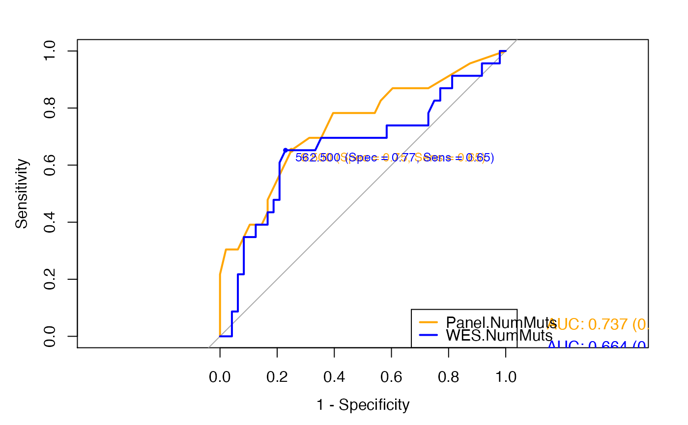

compareROC.RdThis function takes in input two sets of TMB values for the same samples and a binary variable representing the clinical response to immunotherapy. It generates two ROC curves showing performance of the two TMB datasets to discriminate between responders and nonresponders, as well as the best TMB cutoff.
compareROC(dataset, TMB1, TMB2, method, paired, boot.n)
| dataset | a |
|---|---|
| TMB1 |
|
| TMB2 |
|
| method |
|
| paired | a logical indicating whether you want a paired roc.test. If
NULL, the paired status will be auto-detected by are.paired. If TRUE but the
paired status cannot be assessed by are.paired will produce an error.
See |
| boot.n | for method="bootstrap" and method="venkatraman" only: the
number of bootstrap replicates or permutations. Default: 2000.
See |
Returns in standard output the result of the test used to compare the two ROC curves and a pdf file containg plots of the ROC curves and their respective AUC, sensitivity and specificity values and the best threshold for sample classification.
Laura Fancello
## Compare the ROC curves representing the performance of panel-based and ## WES-based TMB to predict clinical response with the default delong method. # Set the seed to create reproducible train and test sets in generateROC set.seed(949) # Read TMB values and response to immunotherapy data(Hellman_SimulatedFM1Panel_WES) # Compare ROCs compareROC(dataset = Hellman_SimulatedFM1Panel_WES, TMB1 = "Panel.NumMuts", TMB2 = "WES.NumMuts", method = "d", paired = TRUE)#>#>#>#>#> #> DeLong's test for two correlated ROC curves #> #> data: TMB1 and TMB2 by as.factor(dataset$ClinicalResponse) (nonresponder, responder) #> Z = 1.05, p-value = 0.2937 #> alternative hypothesis: true difference in AUC is not equal to 0 #> sample estimates: #> AUC of roc1 AUC of roc2 #> 0.7368659 0.6644022 #>#>#>